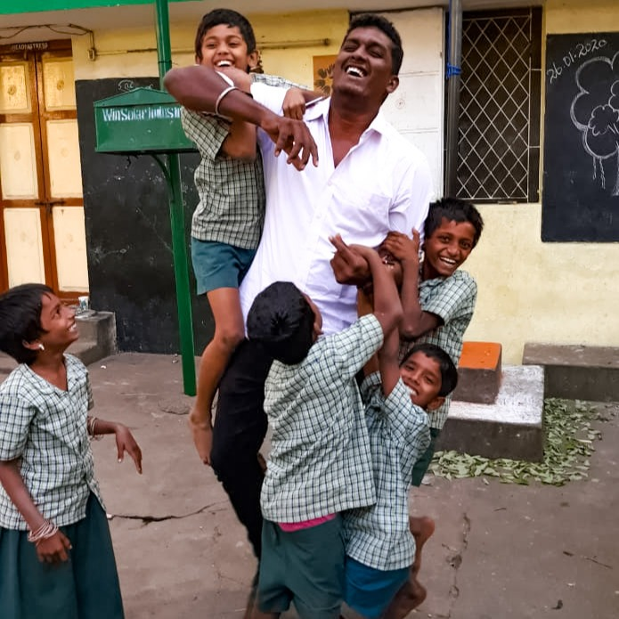

Our Story

Who are we?
Dserve is a volunteer driven community working towards the upliftment of the underprivileged and disabled communities. In 2013, a group of college friends decided to celebrate Christmas and New Year in an unconventional way. During the discussions, one of them stumbled upon the idea of spending time with children at a special school/orphanage. They visited Vasantham special school in Chennai to conduct a fun event. Witnessing the smile on the faces of children created a new sense of contentment in them. All of them decided to not let the contentment fade away and to keep it going. This is where the spark for conceiving Dserve was ignited.
Over the last 8 years, Dserve has grown stronger and bigger through word of mouth and with support of many more like minded people joining our activities. Today, Dserve is a lot more than just special events. Our mission is to empower the underprivileged and disabled communities. We intend to achieve this through our dedicated initiatives.
What we do?
Enable Arts — For Disabled Talents/Artists
Aims to showcase the artistic talents of people with disability by promoting their work through various platforms. Our vision is to act as a bridge to connect the special talents with the right people for mentorship and help them to achieve financial independence.
Paatshala — For Underprivileged Children
Paatshala was initiated with the aim of guiding the underprivileged children in shaping their career. We plan to identify each one's calibre, foster their skills and make them ready to face the competitive world. In this process, we also work with them in upgrading their soft skills and communication.
General Initiatives
For those who need help: Awareness creation to build an inclusive society. Organizing events in special schools and orphanages during various occasions. Supporting special schools and orphanages with their current needs and many more.
Official Launch

Dserve was officially launched as an NGO on March 20, 2022, by the national awardee and disability activist, Dr. Malvika Iyer, and Miss Virali Modi, a renowned motivational speaker and disability activist, in a virtual event. Over 80 people attended the event.
Dserve was started in 2013 when a group of college friends from SRM Institute of Science and Technology, Chennai decided to celebrate Christmas and New year with children in Vasantham, a school and home for people with special needs in Chennai.